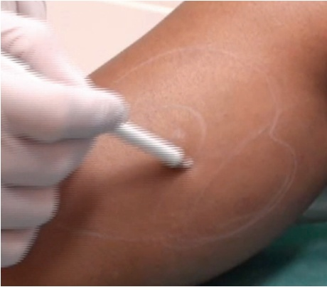
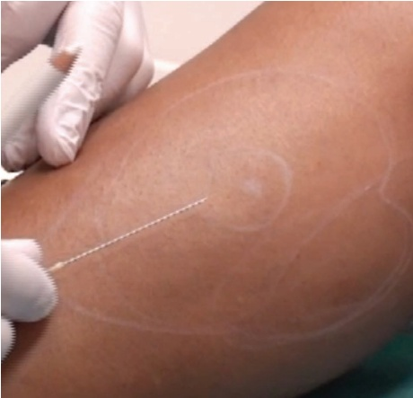
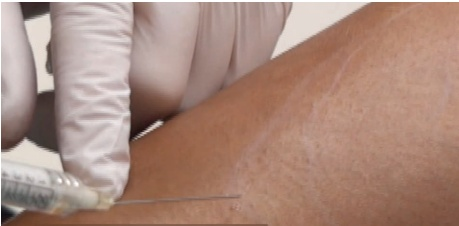
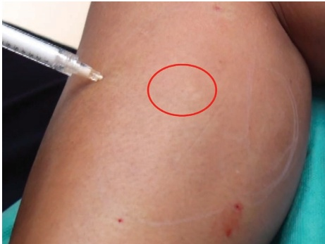

37 四肢：腓肠肌丰容
37.1 引言
Benslimane描述了曲线分布的对称性、从膝盖到脚踝的渐变，以及垂直的直度似乎是定义美腿最重要的特征 [1]。小腿的形状由比目鱼肌和腓肠肌的发育、胫骨等骨骼的长度和方向，以及皮下脂肪的分布决定。由于疾病（如小儿麻痹症或创伤）或先天性缺陷（如胫骨扭转、扁平足或膝外翻）引起的畸形、不对称和/或萎缩，可能成为进行美容小腿增生的原因 [2–4]。随着微创治疗需求的增加，使用羟基磷灰石钙（CaHA）进行小腿增生越来越受欢迎。用CaHA注射可以为小腿增加体积并重塑下肢。作为真皮填充剂的替代疗法包括硅胶植入物、自体脂肪移植和透明质酸注射 [2,5–9]。
37.2 危险区域
肌肉内注射可能导致筋膜室综合征。然而，如果停留在正确的皮下层，风险可忽略不计。
37.3 小腿增生钝性套管针技术
37.3.1 分步技术
-
让患者站立并踮脚尖，在站姿下标记治疗区域，以便更好地评估。与患者讨论他们认为需要增生的具体区域。
-
彻底消毒治疗区域。整个治疗过程中保持消毒。同时也要消毒足部，以避免套管针在治疗过程中可能受到污染。
-
标记肌肉投影最大的点（图37.1）。
-
在预定位置进行麻醉和打预孔（图37.2）。
-
可以考虑先用利多卡因渗透后再注射CaHA。
-
使用标准稀释的CaHA（每1.5 mL CaHA配0.3 mL利多卡因）。




-
注意顶端。此最大投影点需要注射更多产品（在扇形技术或需要时注射额外团注）(图 37.4)。
-
使用扇形技术将羟基磷灰石钙（CaHA）注入，每向后线性丝（retrograde linear thread）注射 0.05–0.1 mL。建议使用 25G、50 mm 的钝性套管针。
-
轻微弯曲钝性套管针，使其更容易保持尖端朝向浅层（图 37.3）。在皮下平面操作，同时避免肌肉内注射，以防导致筋膜室综合征。
-
在治疗结束时用轻柔按摩使羟基磷灰石钙（CaHA）均匀分布。
参考文献
[1] F. Benslimane, “The Benslimane’s artistic model for leg beauty,” Aesthetic Plast Surg, vol. 36, no. 4, pp. 803–812, 2012.
[2] L. H. Pereira et al., “Bilateral calf augmentation for aesthetic purposes,” Aesthetic Plast Surg, vol. 36, no. 2, pp. 295–302, 2012.
[3] L. N. Carlsen, “Calf augmentation—a preliminary report,” Ann Plast Surg, vol. 2, no. 6, pp. 508–510, 1979.
[4] R. A. Gutstein, “Augmentation of the lower leg: A new combined calf-tibial implant,” Plast Reconstr Surg, vol. 117, no. 3, pp. 817–826, 2006.
[5] D. Melita, A. Innocenti, “Surgical calfaugmentation techniques: Personal experience, literature review and analysis of complications,” Aesthetic Plast Surg, vol. 43, no. 4, pp. 973–979, 2019.
[6] P. Hedén et al., “Body shaping and volume restoration: The role of hyaluronic acid,” Aesthetic Plast Surg, vol. 33, no. 3, pp. 274–282, 2009.
[7] I. Niechajev, C. Krag, "Calf augmentation and restoration: Long-term results and the review of the reported complications," Aesthetic Plast Surg, vol. 41, no. 5, pp. 1115–1131, 2017.
[8] G. S. Mundinger, J. E. Vogel, “Calf augmentation and reshaping with autologous fat grafting,” Aesthet Surg J, vol. 36, no. 2, pp. 211–220, 2016.
[9] K. Andjelkov et al., “Safety and efficacy of subfascial calf augmentation,” Plast Reconstr Surg, vol. 139, no. 3, pp. 657e–669e, 2017.